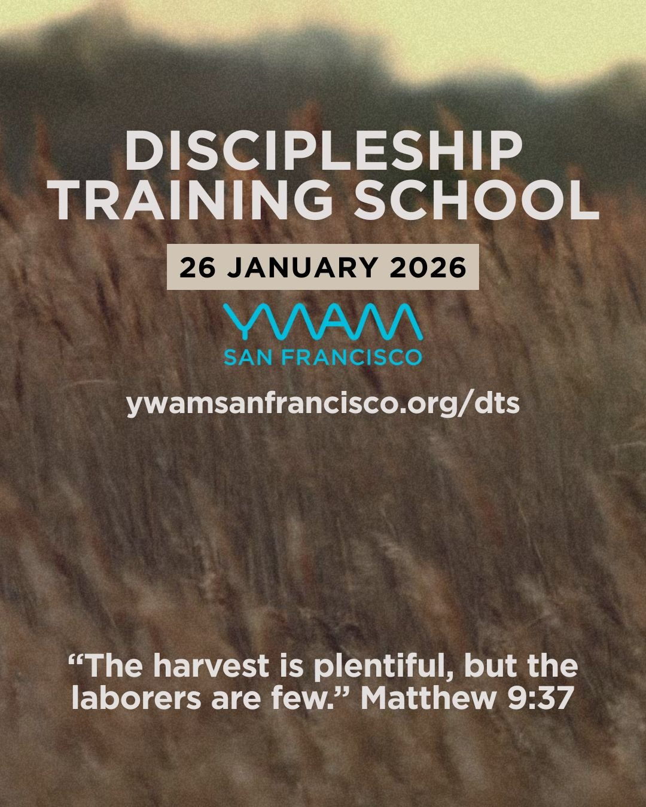

Training
7 stories.

Step into your calling
Be trained. Be transformed. Be sent. DTS starting January 18 is your chance to live out your faith and impact the world around you.

Where Faith meets the Marketplace
The SOTB exists to train faith-driven leaders to bring transformation to the marketplace, where profit and purpose meet.

The Harvest is plentiful
DTS is not just a program; it is a season of transformation where Jesus shapes your heart, deepens your identity, strengthens your faith, and equips you to go wherever…

Discover God’s Heart
Discover God’s Heart in the City. The Journey of a Discipleship Training School (DTS) in San Francisco

God's heart in the Marketplace
Discover how to use your entrepreneurial gifts to advance the Kingdom of God in every sphere of society.

Urban DTS
The next DTS (Discipleship Training School) in San Francisco will equip you to embrace urban ministry. This program is crafted to be a transformative journey. Where…

The Great Commission
Business can be more than profit. It can bring hope, justice, and lasting transformation. This school will help you align your business calling with God’s mission. Let…